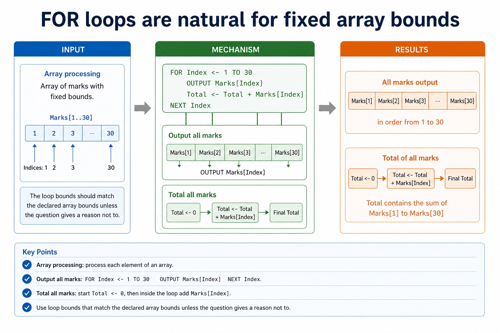

Use built-in functions and library routines exactly as defined. The syllabus states that any function not given in the Cambridge pseudocode guide will be provided, and string manipulation functions will always be given in the question. Students are not expected to memorise one unofficial substring API.
Read the supplied function name, parameter order, position convention and returned type before using it. LENGTH is a familiar built-in example; LEFT, RIGHT, MID or SUBSTRING examples in this course illustrate a mechanism only when their definition and indexing convention are stated.
A function call returns a value, so it can be assigned, compared, output or combined in an expression. Do not import Java's zero-based substring convention unless the question explicitly specifies it.
Worked example: Apply a supplied string routine
A question defines EXTRACT(Text, Start, Count) using positions starting at 1. LENGTH("NETWORK") returns 7; EXTRACT("NETWORK", 4, 2) returns "WO". Code <- EXTRACT(UCASE(Name), 1, 3) nests a supplied library routine inside an expression.
Core syllabus practice
Use supplied built-in and library routines: apply and assess
Targeted practice
1. Will an unfamiliar string manipulation function be supplied?
Show answer
Yes. The syllabus says string manipulation functions will always be given.
2. What must be checked before tracing EXTRACT?
Show answer
Its supplied parameter order, position/index convention and return definition.
3. May a returned string be assigned to a variable?
Show answer
Yes; a function return can be used wherever a compatible value is needed.
Exam-style question
4 marks
A question defines TAKE(Text, Start, Count), with positions starting at 1. State LENGTH("ALGORITHM"), state TAKE("ALGORITHM", 3, 4), and write an assignment that converts the extracted text to upper case using supplied routine UCASE.
Show MS
Answer
Guidance
Marks
LENGTH result is 9
Do not require memorisation of an unstated substring signature or import Java's zero-based indexes.
1
TAKE result is GORI
1
uses the supplied Start/Count convention rather than Java indexing
1
assigns UCASE(TAKE("ALGORITHM", 3, 4)) or equivalent to a variable
Use a count-controlled loop when the number of repeats is known.
A FOR loop is the tidy classroom register of repetition: start here, finish there, do the same block each
time. It is perfect for fixed ranges, totals, arrays and trace-table questions. The usual mark loss is
caused by an off-by-one error in the loop bounds.
WriteCambridge-style FOR...NEXT loops with clear bounds
Tracecounter values and accumulator changes through each iteration
ChooseFOR loops when repetition count is known, not guessed
StartCount <- 1
StopTO 5
RepeatNEXT Count
The counter is not decoration. It decides exactly how many times the block runs.
Why this matters
FOR loops appear in tracing, array processing, totals, counts, searching and validation preparation.
Common error
If the loop runs from 1 TO 10, it normally runs 10 times. Do not import Java's zero-based habits automatically.
Warm-up hook
How many times does this loop run?
Click the correct answer for this Cambridge-style pseudocode.
Pseudocode
FOR Count <- 1 TO 5
OUTPUT Count
NEXT Count
Choose the count
Choose how many counter values are output.
FOR loop structure
A FOR loop has a counter, a start value and an end value
Chinese support: counter 计数器, iteration 一次循环, bound 边界, accumulator 累加器。
General pattern
FOR Counter <- StartValue TO EndValue
// repeated statements
NEXT Counter
Concrete example
Total <- 0
FOR Count <- 1 TO 5
Total <- Total + Count
NEXT Count
OUTPUT Total
Use a FOR loop when the number of repetitions is known before the loop starts.
Counter and accumulator
Do not confuse the counter with the running total
Variable
Role
Example
Count
loop counter; controls the current iteration
1, 2, 3, 4, 5
Total
accumulator; stores a running total
0, 1, 3, 6, 10, 15
Limit
bound; controls where the loop stops
5 in 1 TO 5
Do not confuse the counter with the running total
Do not confuse the counter with the running total: source-grounded visual explanation.
Lesson fact: Counter and accumulator
Lesson fact: Variable
Lesson fact: loop counter; controls the current iteration
Lesson fact: 1, 2, 3, 4, 5
Lesson fact: accumulator; stores a running total
Lesson fact: 0, 1, 3, 6, 10, 15
Lesson fact: bound; controls where the loop stops
Lesson fact: 5 in 1 TO 5
Trace table
Trace after the update, not before it
Pseudocode
Total <- 0
FOR Count <- 1 TO 4
Total <- Total + Count
NEXT Count
OUTPUT Total
Trace
Count
Total after update
1
1
2
3
3
6
4
10
Array processing
FOR loops are natural for fixed array bounds
Output all marks
FOR Index <- 1 TO 30
OUTPUT Marks[Index]
NEXT Index
Total all marks
Total <- 0
FOR Index <- 1 TO 30
Total <- Total + Marks[Index]
NEXT Index
The loop bounds should match the declared array bounds unless the question gives a reason not to.
FOR loops are natural for fixed array bounds

FOR loops are natural for fixed array bounds: source-grounded visual explanation.
Lesson fact: Array processing
Lesson fact: Output all marks
Lesson fact: FOR Index <- 1 TO 30
Lesson fact: OUTPUT Marks[Index]
Lesson fact: NEXT Index
Lesson fact: Total all marks
Lesson fact: Total <- 0
Lesson fact: Total <- Total + Marks[Index]
Lesson fact: The loop bounds should match the declared array bounds unless the question gives a reason not to.
Bounds and off-by-one errors
One wrong bound can miss or invent an iteration
Loop
Counter values
Iterations
Common issue
1 TO 5
1, 2, 3, 4, 5
5
none
0 TO 4
0, 1, 2, 3, 4
5
only if array uses 0-based bounds
1 TO 4
1, 2, 3, 4
4
misses item 5 if five items are required
One wrong bound can miss or invent an iteration
One wrong bound can miss or invent an iteration: source-grounded visual explanation.
Lesson fact: Bounds and off-by-one errors
Lesson fact: Counter values
Lesson fact: Iterations
Lesson fact: Common issue
Lesson fact: 1, 2, 3, 4, 5
Lesson fact: 0, 1, 2, 3, 4
Lesson fact: only if array uses 0-based bounds
Lesson fact: 1, 2, 3, 4
Lesson fact: misses item 5 if five items are required
Java support only
Java for loops are useful, but not the exam answer format